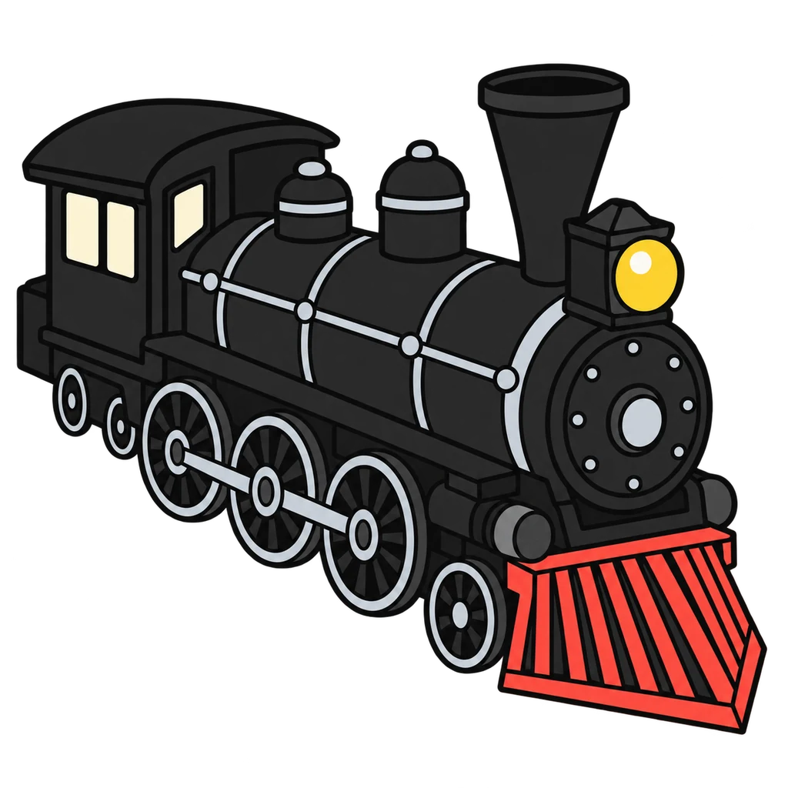
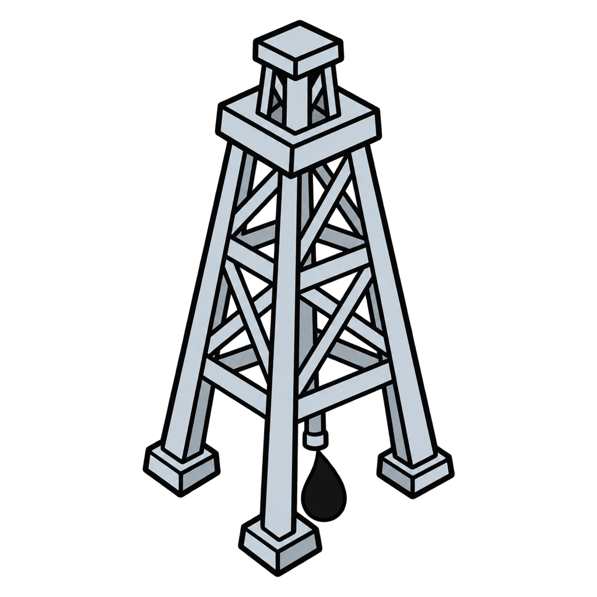
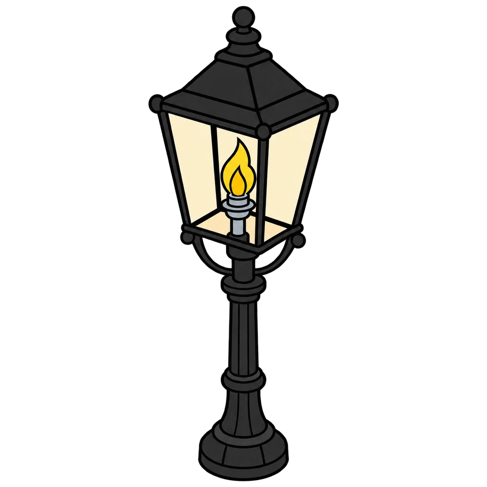
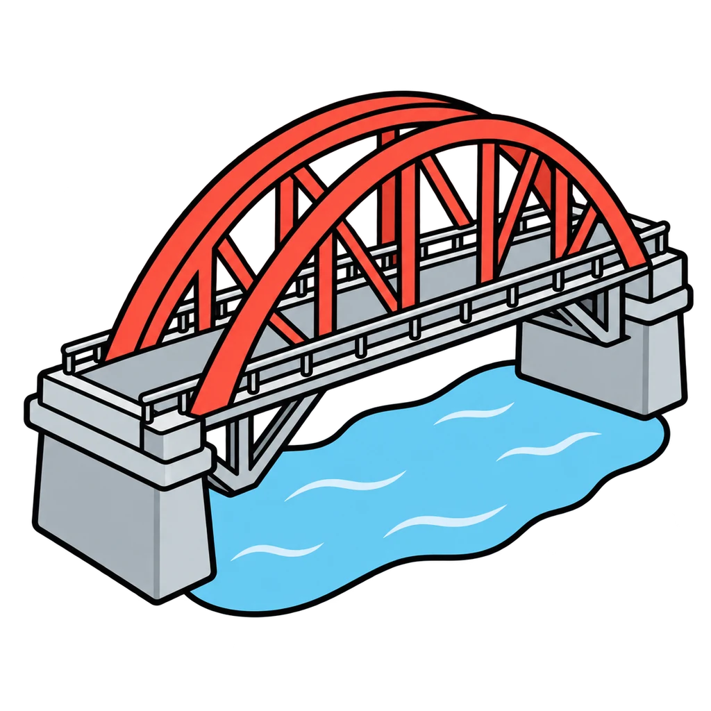
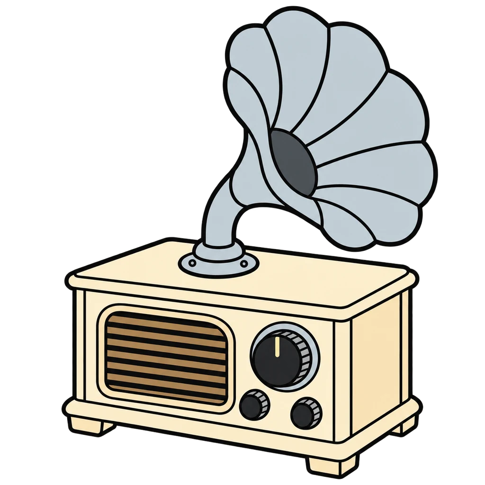

Reviews Lesson 2.15. Reviews Lesson 2.15, both days, in the Gilded Age Market. Round 1 is Part A of Handout 02.15 (the eight news cards from 1873 and 1882, plus the GAS card and the bank rule) plus one piece of each of the kit's eight dispatches, Rounds 1 to 8, all scored on the company and the direction the kit's price table shows between that round and the one before. Two cards score No change: the bank (no share price) and Edison Electric Light joining the board in 1882 (no earlier price to compare; the change is that a new line exists), which is the handout key's own answer. Round 2 is Part B (the six headlines from 1893), the first sentence of the Round 4 dispatch that a student runs the tests on aloud, the key's rewrite of a hype headline as a fact, the lesson's post from the present, and two hype headlines written for the game in 1901 and 1928; say after the game, as the lesson does, that every hype headline is mine and every fact is from the kit. Use Round 1 as the warm-up before any trading round from Lesson 2.16 on, and Round 2 the day before the Investor Report, since 'names the dispatch' and the three tests are the Meets descriptor on Rubric 02 criterion 2. STEEL is on the button row as a distractor; no card moves it, because its only dispatch line is the day its shares went on sale. Grade 6 plays Round 1 with the eight Part A cards only and Round 2 with four headlines.

Fact or Hype
A dispatch appears. Tap the venture it moves, then Up, Down, or No change. Then a headline appears, and you tap Fact or Hype using three tests: who says it, is there a number, does it tell you to hurry.
How to play
- More buyers than sellers: the price goes up. More sellers than buyers: the price goes down. News changes how many people want to buy or sell.
- Who says it? A named company, a court, Congress, a dated report passes. Insiders, everyone, or no source fails.
- Is there a number? A date, a percent, an amount, or a count passes. No number fails.
- Does it tell you to hurry? No rush words passes. Now, last chance, before it is too late, everyone is selling fails.
- Two or three points: probably a fact. Zero or one: hype.





Done
The ones to study:
Worth knowing by heart:
- Handout 02.15: the rule in two lines and the four kinds of news you have already heard
- Part A: match the news card to the price change on the board, then say the cause and effect: what happened, so more people wanted to buy or sell, so the price went up or down
- Part B: the three tests, who says it, is there a number, does it tell you to hurry; two or three points is probably a fact, zero or one is hype
- When a headline says buy now, who benefits if you do?